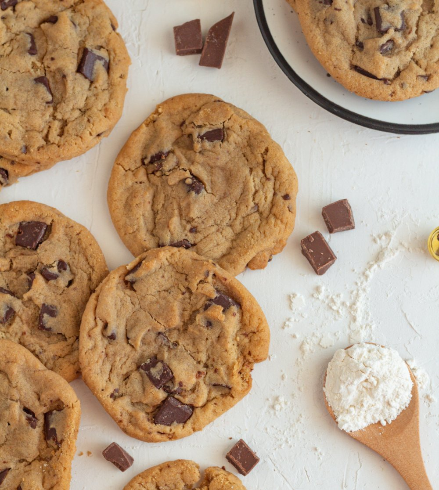

Vive les cookiiiiiiiiiies !!

Vous voici sur la page de la rectte qui fait battre mon pôti coeur
La rectte est inspirée de celle du fameux Cyril Lagnac, pour un maximum de croquant et de fonndant
Les ingrédients
- Farine
- Sucre cassonade (roux)
- Chocolat
Step by Step
- Melanger le beurre pommade avec la farine
- Melanger a part l'oeuf et le sucre
- incorporer tout ensemble